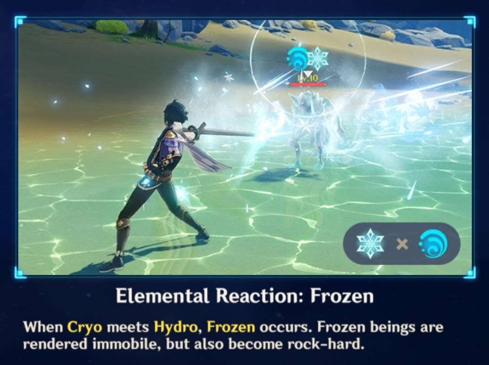
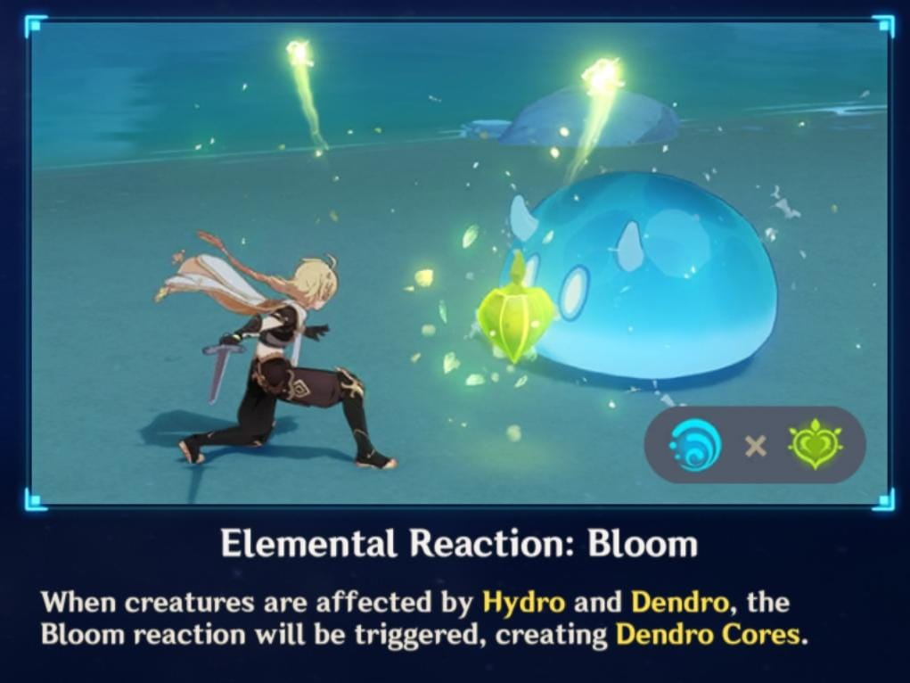
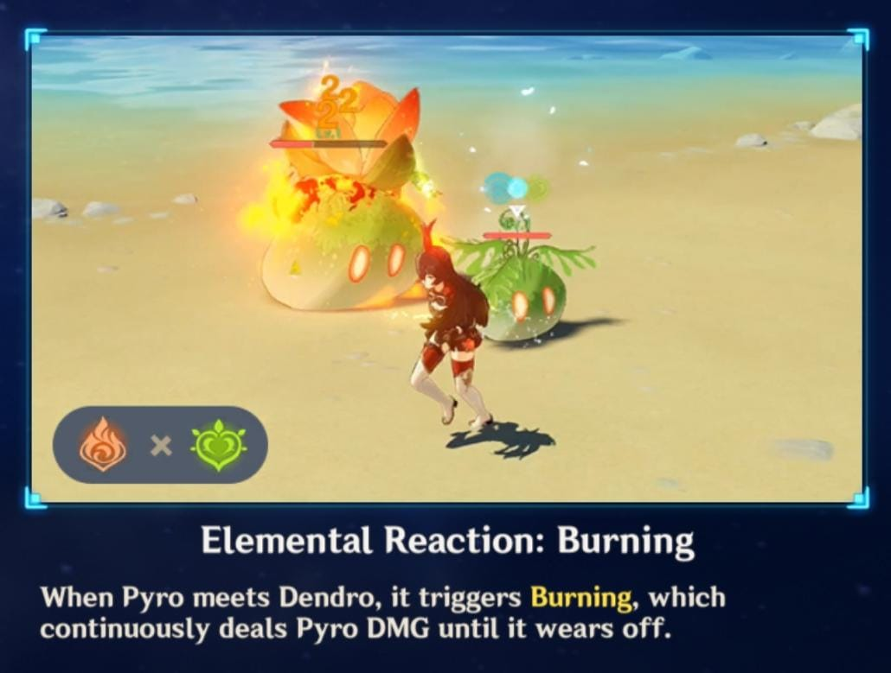
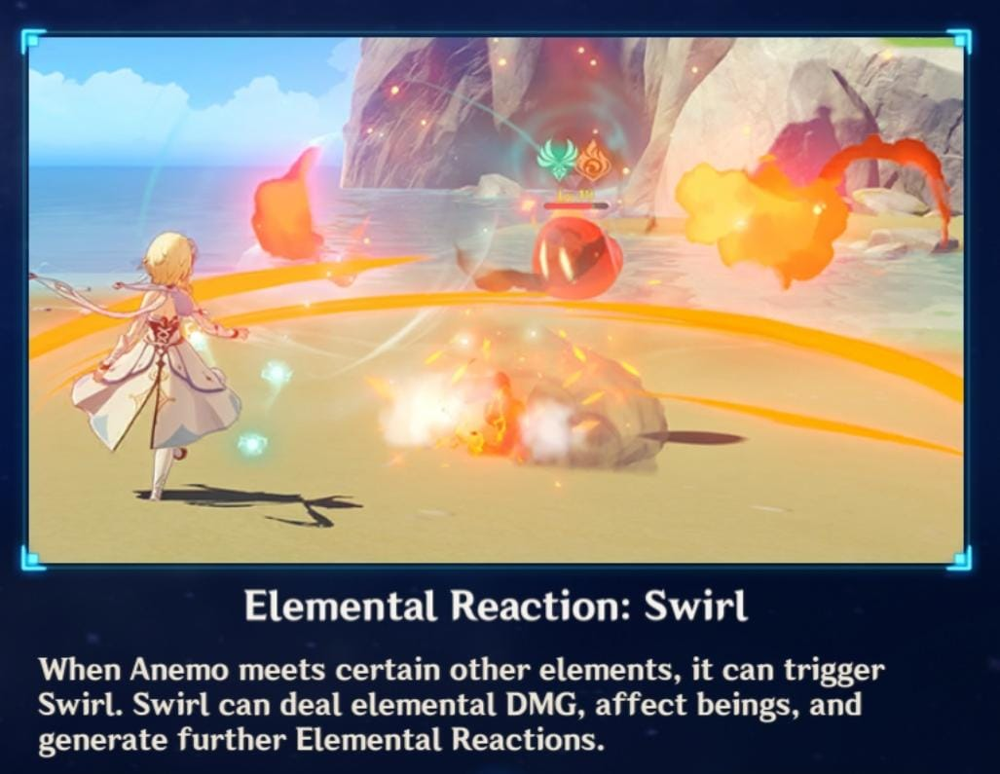
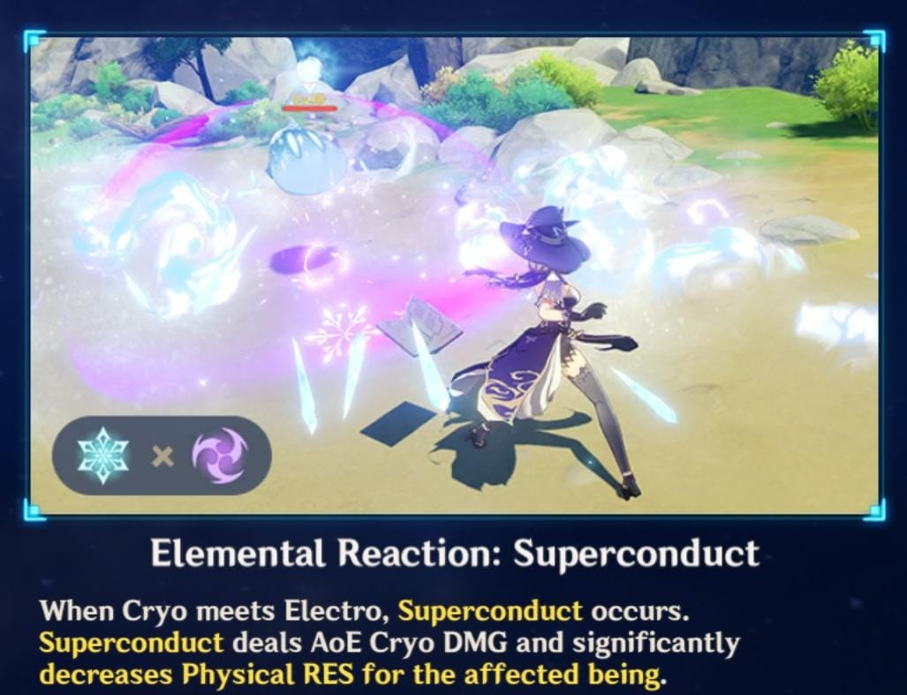
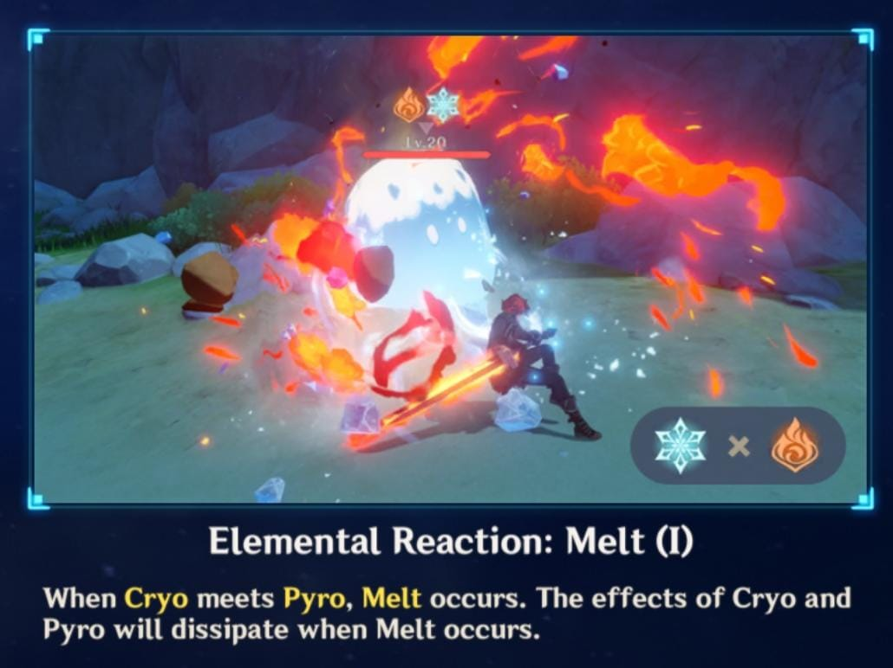
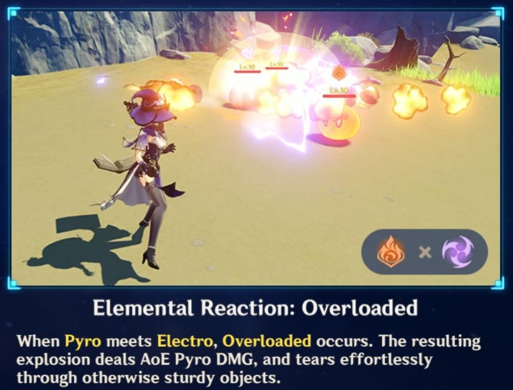
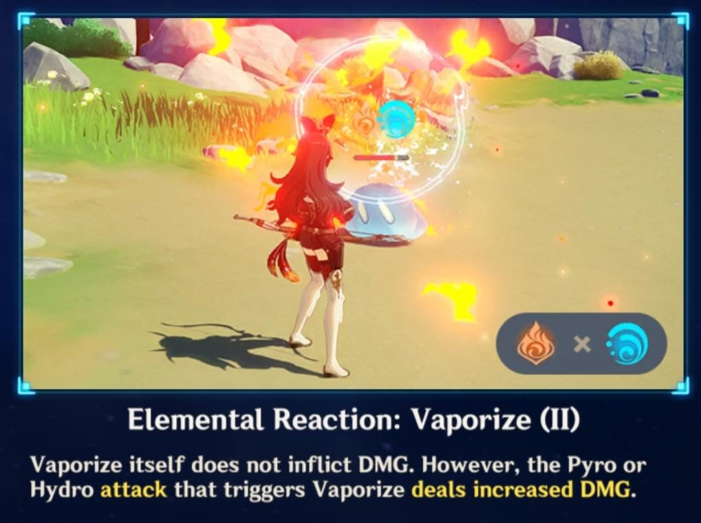
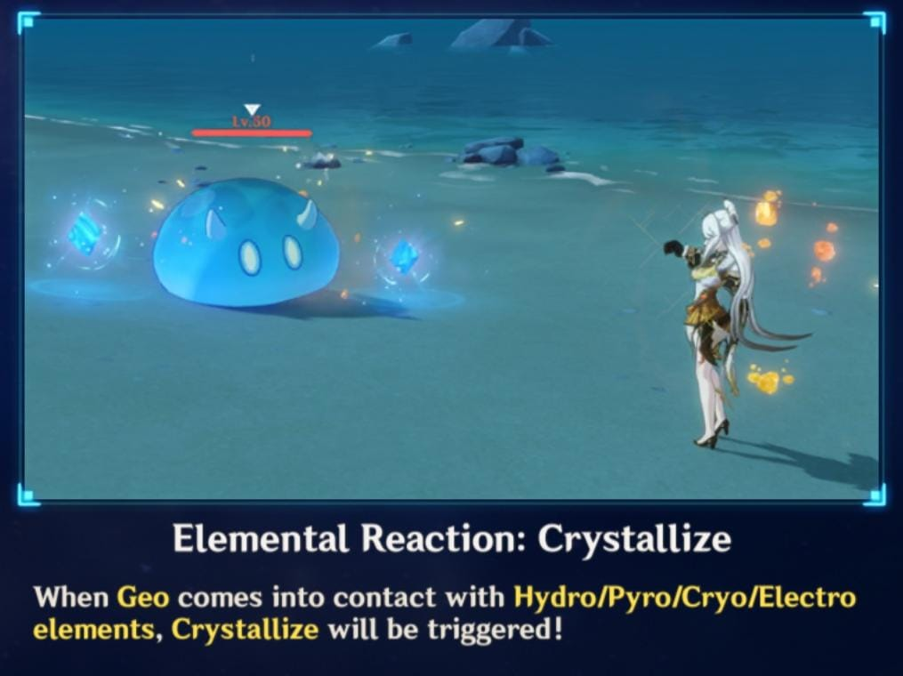

Genshin Impact is a story based game. You get a choice to choose one of thw twins and the plot will
remain the same regardless of which twin you pick because in the story you will get seperated from your twin and have
to fund your twin at the end of your journey.
A floating campanion named paimon will be your travel guide as you saved her from drowning while fishinh and will help you throughout the game
Welcome to the Genshin Impact Website
Introduction
Click here to watch the original video on YouTube
Reactions










Genshin Impact Tips for Beginners:
- Doing your daily commissions which will take about 15 minutes
- Farm in domains or the leylines on a daily basis
- Open as many teleport waypoints as possible so you can teleport through the map instead of walking or running
- Cook heaing food in advance before any fight
- Focus on Archon Quests because that is that main story
- Level up your favorite characters and try to build them along with their weapon
- Leveling up Adventure Rank to get greater rewards
- Collect all the anemoculous and the geoculous to increase your stamina to max level
- Use your mora and primogems carefully
- Achivements give you 5-20 primogems
- Collect any plant you see or attack any tree to get wood
- Domains. There are 3 types: weapon, books and artifacts for your characters
- Beat weekly bosses and also the weekly bounties
- if you reach Adventure rank 16, you can play in coop mode
- Seelie: follow them because they will lead you to a treasure
- You can unlock an area by unlocking the statue of seven but make sure you are on single mode first
- You can pull wishes on banners with 160 primogem to get a chance to pull your favorite characters